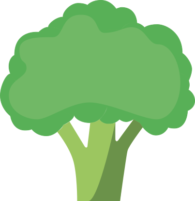
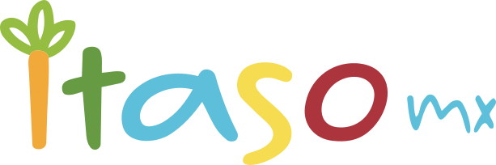
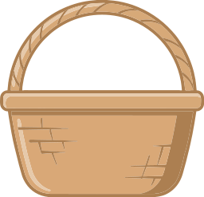
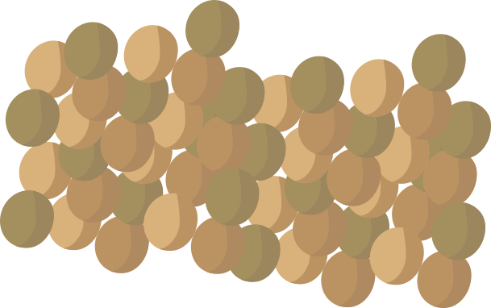
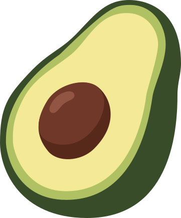

Verduras y frutas
Prueba distintos colores y prefiere fruta entera. Para la escuela: pepino y manzana en trozos.


DEL JUEGO A TU DÍA A DÍA
Combina alimentos de distintos grupos. Da más espacio a verduras y frutas, elige cereales integrales e incluye leguminosas con frecuencia.

Prueba distintos colores y prefiere fruta entera. Para la escuela: pepino y manzana en trozos.
Dan energía. Prefiere versiones integrales, como pan integral para tu sándwich.

Frijoles, lentejas y habas aportan fibra y proteína vegetal. Combínalos con verduras.
Alterna huevo, pescado y otras opciones. Prefiere preparaciones asadas o a la plancha.

Incluye pequeñas cantidades. Prueba aguacate sobre una tostada con frijoles.

Elige agua simple, limita refrescos y revisa los sellos de los productos envasados.
Conoce más en la guía del Plato del Bien Comer del Instituto Mexicano del Seguro Social.